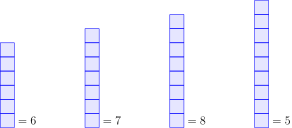

<!DOCTYPE html>

<html lang="nb">
	<link rel="stylesheet" href="../book_styles.css">
</html>
<head>
	<title>Matematikkens byggesteiner</title>
</head>
<body>
<div id="book"><h1>1 Tall og telling</h1><div><section><h2 class="section-title">1.1 Likhetstegnet, mengder og tallinjer</h2>

<h3 class="subsection-title">Likhetstegnet</h3>
Som navnet tilsier, viser <span class="outline">likhetstegnet</span>  
<span class="symbol"><math class="inline-math"><mo>=</mo></math></span>
til at noe er likt. I hvilken grad og når man kan si at noe er likt er en filosofisk diskusjon, så i starten er vi prisgitt dette: <span class="slant">Hvilken likhet
<span class="symbol"><math class="inline-math"><mo>=</mo></math></span>
sikter til må bli forstått ut fra konteksten tegnet blir brukt i </span>. Slik kan vi studere noen grunnleggende egenskaper for tallene våre, og så komme tilbake til mer presise betydninger av tegnet. 
<div class="language-box"><h4>Språkboksen</h4>
Vanlige måter å si 
<span class="symbol"><math class="inline-math"><mo>=</mo></math></span>
på er
<ul>
	<li>''er lik'' 
	</li><li>''er det samme som''
	</li><li>''tilsvarer''
</li></ul>
</div>
<h3 class="subsection-title">Mengder og tallinjer</h3>
I denne boka skal vi bruke to måter å representere tallene på; tall som en <span class="slant">mengde </span> og tall som en <span class="slant">plassering på en linje </span>. Alle representasjoner av tall tar utgangspunkt i forståelsen av tallene 0 og 1.

<span id="numbers_as_amounts"><h4 class="subsubsection-title">Tall som mengde</h4>
	Når vi snakker om en mengde, vil tallet 0 bety
	<button class="footnote-button" data-reference="0interpretations">*</button><div class="footnote" id="0interpretations" hidden="">I <span class="reference-chapter" data-reference="Rekneartane"> </span> skal vi se at det også er andre tolkninger av 0.</div>
	''ingenting''. En figur der det ikke er noe til stede vil slik være det samme som 0:
	<math class="display-math" display="block"><mo>=</mo><mn>0</mn></math>
	1 vil vi tegne som en rute:
	<div class="figure">  </div>
Andre tall vil da være definert ut fra hvor mange enerruter ('enere') vi har: 
	<div class="figure">  </div>
	<div class="figure">  </div></span>
<h4 class="subsubsection-title">Tall som plassering på ei linje</h4>
	Når vi plasserer tall på ei linje, vil 0 være utgangspunket vårt:
	<div class="figure">  </div>
	Så plasserer vi 1 en viss lengde til høyre for 0:
	<div class="figure">  </div>
	Andre tall vil da være definert ut fra hvor mange enerlengder ('enere') vi er unna 0:
	<div class="figure">  </div>

<h3 class="subsection-title">Positive heltall</h3>
Vi skal straks se at tall ikke nødvendigvis trenger å være <span class="slant">hele </span> antall enere, men tallene som <span class="slant">er </span> det har et eget navn:

<div class="rule"><h4>1.1 Positive heltall</h4> 
Tall som er et helt antall enere kalles 
<span class="outline">positive<button class="footnote-button" data-reference="posintoutl">*</button><div class="footnote" id="posintoutl" hidden="">hva ordet 'positiv' betyr skal vi se på i <span class="reference-chapter" index-reference=""> </span></div> heltall </span>
De positive heltallene er
<math class="display-math" display="block"><mrow>
    <mn>1</mn>
    <mo>,</mo>
    <mn>2</mn>
    <mo>,</mo>
    <mn>3</mn>
    <mo>,</mo>
    <mn>4</mn>
    <mo>,</mo>
    <mn>5</mn>
    <mo>,</mo>
    <mtext> og så videre.</mtext>
  </mrow></math>
Positive heltall blir også kalt <span class="outline">naturlige tal</span>.
</div>
<div class="info"> <h4>Hva med 0?</h4> 
Noen forfattere inkluderer også 0 i begrepet naturlige tal. I noen sammenhenger vil dette lønne seg, i andre ikke.
</div>

<h4 class="subsubsection-title">Ulikhetstegn</h4>
Vi har også symboler som viser at verdier <span class="slant">ikke </span> er like. Noen ganger er det nok å si at de ikke er like, andre ganger er det også behov for å si hvilken av verdiene som er størst (og minst).
<div class="language-box"><h4>Språkboksen</h4> 
	<math class="display-math" display="block"></math><div style="text-align: center;">
    <table style="margin: 0 auto; border-collapse: collapse;">
      <style>
        td { padding: 4px 8px; }            /* similar to rraystretch{1.2} */
        td.spacer { width: 0.4cm; }
      </style>
      <tbody><tr>
        <td>
          <math xmlns="http://www.w3.org/1998/Math/MathML">
            <mo>≠</mo>
          </math>
        </td>
        <td class="spacer"></td>
        <td>''er ikke like''</td>
      </tr>
      <tr>
        <td>
          <math xmlns="http://www.w3.org/1998/Math/MathML">
            <mo>&lt;</mo>
          </math>
        </td>
        <td class="spacer"></td>
        <td>''er mindre enn''</td>
      </tr>
      <tr>
        <td>
          <math xmlns="http://www.w3.org/1998/Math/MathML">
            <mo>&gt;</mo>
          </math>
        </td>
        <td class="spacer"></td>
        <td>''er større enn''</td>
      </tr>
      <tr>
        <td>
          <math xmlns="http://www.w3.org/1998/Math/MathML">
            <mo>≤</mo>
          </math>
        </td>
        <td class="spacer"></td>
        <td>''er mindre enn eller lik''</td>
      </tr>
      <tr>
        <td>
          <math xmlns="http://www.w3.org/1998/Math/MathML">
            <mo>≥</mo>
          </math>
        </td>
        <td class="spacer"></td>
        <td>''er større enn eller lik''</td>
      </tr>
    </tbody></table>
  </div>
</div> 

<div class="example"><h4>Eksempel 1.1 </h4> 
<math class="display-math" display="block"><mtable columnalign="center left">
    <mtr>
      <mtd><mn>0</mn></mtd>
      <mtd><mo>≠</mo><mn>1</mn></mtd>
    </mtr>
    <mtr>
      <mtd><mn>7</mn></mtd>
      <mtd><mo>&lt;</mo><mn>9</mn></mtd>
    </mtr>
    <mtr>
      <mtd><mn>5</mn></mtd>
      <mtd><mo>&gt;</mo><mn>2</mn></mtd>
    </mtr>
    <mtr>
      <mtd><mtext>positive partall</mtext></mtd>
      <mtd><mo>≥</mo><mn>2</mn></mtd>
    </mtr>
    <mtr>
      <mtd><mn>3</mn></mtd>
      <mtd><mo>≤</mo><mtext>positive oddetall</mtext></mtd>
    </mtr>
  </mtable></math>
</div>
<div class="info"> <h4>Leseretning</h4> 
Strengt tatt har vi bare tre symboler for ulikhet, nemlig 
<math class="inline-math"></math><span class="symbol"><math class="inline-math"><mo>≠</mo></math></span>
, 
<math class="inline-math"></math><span class="symbol"><math class="inline-math"><mo>&lt;</mo></math></span>
 og 
<math class="inline-math"></math><span class="symbol"><math class="inline-math"><mo>≤</mo></math></span>
. De to sistnevnte symbolene krever leseretning fra venstre mot høyre. Ulikheten
<math class="inline-math"><math><mn>3</mn><mo>&lt;</mo><mn>5</mn></math></math>
leser vi som ''3 er mindre enn 5''. Men vi kan også si at 
<math class="inline-math"></math><span class="symbol"><math class="inline-math"><mo>&lt;</mo></math></span>
er et symbol med retning, hvor den spisse enden skal peke mot den minste verdien. Dette betyr at vi kan lese 
<math class="inline-math"><math><mn>3</mn><mo>&lt;</mo><mn>5</mn></math></math>
fra høyre som ''5 er større enn 3''. Det at vi i tillegg bruker symbolene 
<math class="inline-math"></math><span class="symbol"><math class="inline-math"><mo>&gt;</mo></math></span>
og 
<math class="inline-math"></math><span class="symbol"><math class="inline-math"><mo>≥</mo></math></span>
er et resultat av at vi noen ganger ønsker å si ''større enn'' også når vi leser fra venstre.
</div>


</section><section><h2 class="section-title">1.2 Tall, siffer og verdi </h2>
Tallene våre er bygd opp av <span class="outline">sifrene</span> 
0, 1, 2, 3, 4, 5, 6, 7, 8 og 9, og <span class="slant">plasseringen </span> av dem. Sifrene og deres plassering definerer
<button class="footnote-button" data-reference="10pos">*</button><div class="footnote" id="10pos" hidden="">Etter hvert skal vi også se at <i>fortegn</i> er med på å definere verdien til tallet (se <span class="reference-chapter" data-reference="Negtal">).</span></div>
<span class="outline">verdien</span>  til tallet.
<h3 class="subsection-title">Heltall større enn 9</h3>
La oss som et eksempel skrive tallet 'fjorten' ved hjelp av sifrene våre.
<div class="figure">  </div>
En gruppe med ti 'enere' kaller vi en 'tier'. Av 'fjorten' kan vi lage 1 'tier', og i tillegg har vi da 4 'enere'. Da skriver vi 'fjorten' slik:
<math class="display-math" display="block"><mtext>fjorten</mtext><mo>=</mo><mn>14</mn></math>
<div class="amounts"> <div class="figure">  </div> <span>Mengde</span></div> 
<div class="number-line"> <div class="figure">  </div> <span>Tallinje</span></div>


<h3 class="subsection-title">Desimaltall</h3>
I mange tilfeller har vi ikke et helt antall enere, og da vil det være behov for å dele 1 inn i mindre biter. La oss starte med å tegne en ener
<button class="footnote-button" data-reference="defof1">*</button><div class="footnote" id="defof1" hidden="">Her definerer vi enerlengden større enn tidligere.</div>
<div class="amounts"> <div class="figure">  </div>  <span>Mengde</span></div> 
<div class="number-line"> <div class="figure">  </div> <span>Tallinje</span></div>
Så deler vi eneren vår inn i 10 mindre biter:
<div class="amounts"> <div class="figure">  </div>  <span>Mengde</span></div> 
<div class="number-line"> <div class="figure">  </div> <span>Tallinje</span></div>
Siden vi har delt 1 inn i 10 biter, kaller vi en slik bit for en 'tidel':
<div class="amounts"> <div class="figure">  </div>  <span>Mengde</span></div> 
<div class="number-line"> <div class="figure">  </div>  <span>Tallinje</span></div>

Tideler skriver vi ved hjelp av  <span class="outline">desimaltegnet</span> <span class="symbol"> ,</span>  :
<div class="amounts"> <div class="figure">  </div>  <span>Mengde</span></div> 
<div class="number-line"> <div class="figure">  </div>  <span>Tallinje</span></div>
<div class="example"><h4>Eksempel 1.2 </h4> 
	<div class="figure">  </div>
	<div class="figure">  </div>
</div>
<div class="language-box"><h4>Språkboksen</h4>
På engelsk bruker man punktum <span class="symbol"> .</span> som desimaltegn:
<table style="margin: auto"><tbody><tr><td>3,5</td><td>(norsk)</td></tr><tr><td>3.5</td><td>(engelsk)</td></tr></tbody></table>
Når vi kombinerer matematiske symboler
<button class="footnote-button" data-reference="digits">*</button><div class="footnote" id="digits" hidden="">Sifrene regnes som matematiske symboler.</div>
, får vi det vi kaller et matematisk <span class="outline">uttrykk</span>.
</div>


<h3 class="subsection-title">Titallsystemet</h3>
Vi har nå sett hvordan vi kan uttrykke verdien til tall ved å plassere siffer etter antall tiere, enere og tideler, og det stopper selvsagt ikke der: 

<div class="rule"><h4>1.2 Titallsystemet </h4> 
Verdien til et tall er gitt av sifrene 0, 1, 2, 3, 4, 5, 6, 7, 8 og 9, og plasseringen av dem. Med sifferet som viser enere som utgangspunkt vil
<ul>
	<li>siffer til venstre (i rekkefølge) vise antall tiere, hundrere, tusener og så videre.
	</li><li>siffer til høyre (i rekkefølge) vise antall tideler, hundredeler, tusendeler og så videre.
</li></ul>
</div>
<div class="example"><h4>Eksempel 1.3 </h4> 
	<div class="figure">  </div>
</div>
<div class="example"><h4>Eksempel 1.4 </h4>  
<div class="figure">  </div>
</div>

<div class="rule"><h4>1.3 Partall og oddetall </h4> 
Heltall som har 0, 2, 4, 6 eller 8 på enerplassen kalles <span class="outline">partall</span>.

Heltall som har 1, 3, 5, 7 eller 9 på enerplassen kalles <span class="outline">oddetall</span>.
</div>
<div class="example"><h4>Eksempel 1.5 </h4>
De ti første (positive) partallene er
<math class="display-math" display="block"><mtext>0, 2, 4, 6, 8, 10, 12, 14, 16, og 18</mtext></math>
De ti første (positive) oddetallene er
<math class="display-math" display="block"><mtext>1, 3, 5, 7, 9, 11, 13, 15, 17, og 19</mtext></math>
</div>


</section><section><h2 class="section-title">1.3 Koordinatsystem </h2>
I mange tilfeller er det nyttig å bruke to tallinjer samtidig. Dette kaller vi et <span class="outline">koordinatsystem</span>
<button class="footnote-button" data-reference="coord">*</button><div class="footnote" id="coord" hidden="">Strengt tatt finnes det mange typer koordinatsystem, men i denne boka bruker vi ordet om bare én sort, nemlig det <span class="outline">kartesiske koordinatsystem</span>. Det er oppkalt etter den franske filosofen og matematikeren René Descartes.</div>
. Vi plasserer da én tallinje (en akse) som går <span class="slant">horisontalt </span> og én som går <span class="slant">vertikalt </span>. En plassering i et koordinatsystem kaller vi et <span class="outline">punkt</span>. 
<div class="rule definition"><h4>1.4 Koordinatsystem</h4>Et punkt skriver vi som to tall inni en parentes. De to tallene blir kalt <span class="outline">førstekoordinaten</span> og <span class="outline">andrekoordinaten</span> til punktet. <br>
	
Førstekoordinaten viser punktets plassering langs horisontal-aksen.<br>

Andrekoordinaten viser punktets plassering langs vertikalaksen.
</div>
<div class="example"><h4>Eksempel 1.6 </h4>
I figuren ser vi punktene 
<math class="inline-math"><mo>(</mo><mn>2</mn><mo>,</mo><mn>3</mn><mo>)</mo></math>
,
<math class="inline-math"><mo>(</mo><mn>5</mn><mo>,</mo><mn>1</mn><mo>)</mo></math>
og 
<math class="inline-math"><mo>(</mo><mn>0</mn><mo>,</mo><mn>0</mn><mo>)</mo></math>
.
<div class="figure">  </div>
</div>
<div class="language-box"><h4>Språkboksen</h4>
Punktet der aksene møtes, altså
<math class="inline-math"><mo>(</mo><mn>0</mn><mo>,</mo><mn>0</mn><mo>)</mo></math>
, kalles <span class="outline">origo</span>.	
</div>

<div class="info"> <h4>Merk</h4> 
Størrelsen av en enerlengde kan være forskjellige på de to aksene.
</div>
<div class="example"><h4>Eksempel 1.7 </h4>
<div class="figure">  </div>
</div>
</section></div></div>
	</body>

<script>
  const queryString = window.location.search
  const urlParams = new URLSearchParams(queryString);
  if(urlParams.size > 0) {
    document.getElementById("book").hidden = true
    const paragraph = document.getElementById(urlParams.get("id"))
	  const bodyElement = document.getElementsByTagName("body")[0]
	  bodyElement.append(paragraph)
  }

  for(let footbtn of document.getElementsByClassName("footnote-button")) {
			console.log(footbtn)
			footbtn.addEventListener("click", toggleFootNote)
		}

		function toggleFootNote() {
			let footnote = document.getElementById(this.dataset.reference)
			
			if (footnote.hidden == true) {
				footnote.hidden = false
			} else {
				console.log(footnote.hidden)
				footnote.hidden = true
			}
		}

</script>


</html>


